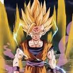
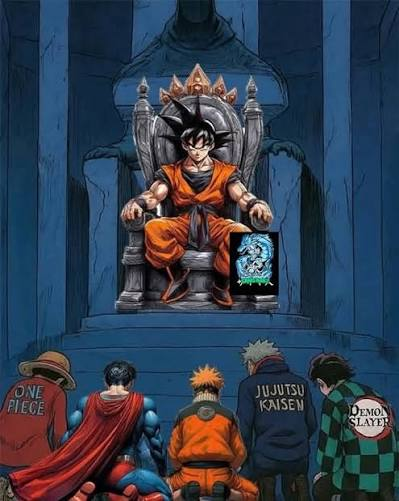
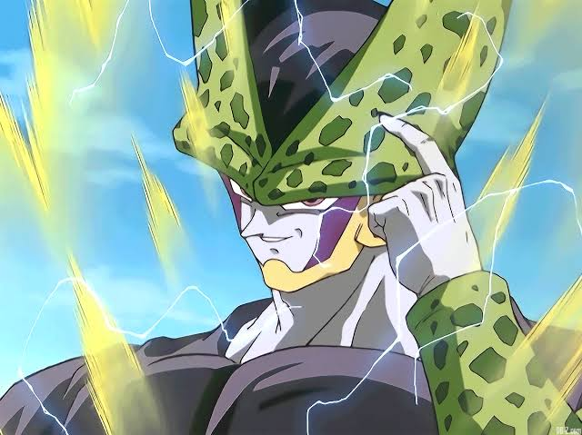

Dragon Ball o pai dos Animes
Dragon Ball é considerado o "pai" do estilo shonen de luta (animes de ação voltados para o público jovem)
porque definiu a fórmula que quase todas as grandes obras usam até hoje.
Criação da Fórmula Shonen
Dragon Ball definiu a estrutura clássica dos animes de ação modernos.
Elementos que hoje parecem comuns — como o protagonista inocente e faminto, os torneios de artes
marciais, os vilões que se tornam aliados (como Vegeta) e os treinamentos intensos — foram
popularizados e lapidados por Akira Toriyama, servindo de modelo direto para sucessos como Naruto,
One Piece e Bleach.

O Conceito de Transformação de Poder
A introdução do Super Saiyajin mudou para sempre a forma como o amadurecimento e a evolução dos
personagens são representados visualmente.
A ideia de que um guerreiro pode quebrar seus limites através de uma mudança física drástica
(cabelos loiros, aura de energia, mudança de olhos) tornou-se um padrão da indústria, repetido em
quase todas as histórias de combate que vieram depois.

Globalização e Impacto Cultural
A obra foi a principal responsável por quebrar barreiras geográficas e levar a cultura pop japonesa
para o Ocidente em escala massiva durante os anos 1990.
Dragon Ball transformou os animes de um nicho asiático em um fenômeno lucrativo e global de
bilheteria, audiência e licenciamento de produtos, abrindo as portas do mercado internacional para
todas as gerações futuras de animações.

Pai dos Animes